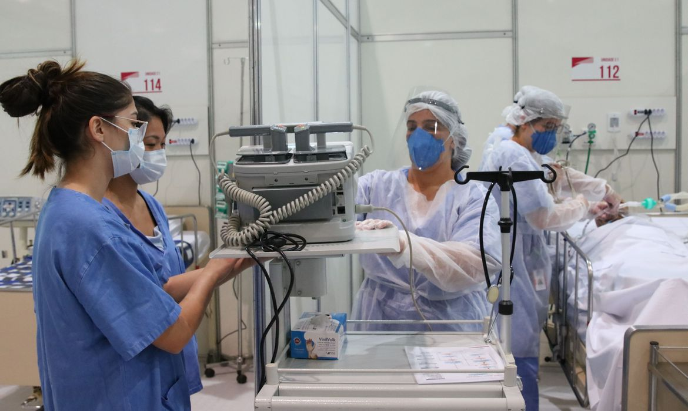
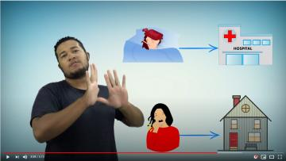

União Europeia compra vacinas Pfizer e BioNTech
A União Europeia fechou acordo com os laboratórios Pfizer e BioNTech para
a compra de até 1,8 bilhão de doses adicionais da vacina contra
a Covid-19, segundo anunciou neste sábado
(8/5) a presidente da Comissão Europeia, Ursula von der Leyen.“Tenho o prazer de anunciar que a Comissão acaba de aprovar um contrato garantindo 900 milhões de doses (com opção de mais 900 milhões) com Pfizer/BioNTech para os anos 2021-2023”, tuitou Von der Leyen, durante uma cúpula europeia em Portugal.
Pontos de vacinação arrecadam alimentos em SP
Começa hoje (5) a arrecadação de alimentos pela campanha Vacina contra a Fome.
A iniciativa, lançada pelo governo do estado de São Paulo,
propõe que os locais de vacinação contra a covid-19
também passem a receber alimentos não perecíveis.
Pelo menos 389 das 645 prefeituras paulistas já aderiram à campanha.
Assim, de forma voluntária, as pessoas que forem se vacinar podem
levar um quilo de alimento não perecível, como arroz, feijão, macarrão e leite em pó.
Possível data para vacinação total no Brasil
SP registra 1.389 mortes por covid-19 em 24 horas

Em um período de 24 horas, o estado de São Paulo registrou 1.389 mortes por covid-19, batendo novo recorde.
Segundo a Secretaria Estadual da Saúde, o número contabiliza dados acumulados desde o feriado da última sexta-feira (2).
Em geral, o número de mortes e de novos casos costuma ser maior às terças-feiras por causa de um represamento de dados que ocorre aos finais de semana. Até então, o maior registro havia ocorrido na última terça-feira, quando foram registradas 1.209 mortes.
Canal do YouTube informa sobre Covid em Libras

Um grupo de estudantes e professores da Ufes lançou um canal no YouTube para divulgar conteúdos das áreas educacional, turística, médica e jurídica na Língua Brasileira de Sinais (Libras). O Canal Na Palma da Mão foi lançado em março e, em tempos de pandemia, o primeiro vídeo foi sobre o novo coronavírus, com informações sobre formas de contágio, prevenção e orientações sobre o que fazer em caso de sintomas.
Covid-19 faz vítimas cada vez mais jovens no Brasil
 O boletim do Observatório Covid-19 da Fiocruz divulgado nesta sexta-feira (7/5) - referente às semanas de 18 de abril a 1º de maio - aponta que o novo coronavírus faz vítimas cada vez mais jovens no Brasil.
De acordo com os dados do estudo, adultos jovens e de meia-idade representam uma parcela cada vez maior dos pacientes em enfermarias e unidades de terapia intensiva (UTI).
O boletim do Observatório Covid-19 da Fiocruz divulgado nesta sexta-feira (7/5) - referente às semanas de 18 de abril a 1º de maio - aponta que o novo coronavírus faz vítimas cada vez mais jovens no Brasil.
De acordo com os dados do estudo, adultos jovens e de meia-idade representam uma parcela cada vez maior dos pacientes em enfermarias e unidades de terapia intensiva (UTI).O boletim aponta que a semana epidemiológica 16 apresenta idade média dos casos de pessoas internadas de 57 anos, contra idade média de 63 anos na semana epidemiológica 1. Para mortes, a média foi de 71 anos na semana epidemiológica 1 e de 64 anos agora na semana 16.


Participantes Do Projeto
Ceres Prado
 Jornalista e Professora de Educação Física
Jornalista e Professora de Educação Física
Formada em jornalismo e educação física, trabalha com formação de professores na metodologia do Esporte Educacional. Em parceria com prefeituras do país todo, atuou na formação de centenas de professores de educação física e polivalentes. Pós pandemia, começou a trabalhar com formação de professores Online na plataforma Moodle, atuando na construção de cursos e acompanhamento dos alunos.
Saiba Mais Sobre As Notícias da Primeira Página
- Fonte Notícia: União Europeia compra vacinas Pfizer e BioNTech
- Fonte Notícia: Pontos de vacinação arrecadam alimentos em São Paulo
- Fonte Notícia: Possível data para vacinação total no Brasil – Plantão COVID-19: As boas notícias
- Fonte Notícia: SP registra 1.389 mortes por covid-19 em 24 horas
- Fonte Notícia: Canal do YouTube informa sobre Covid em Libras
- Fonte Notícia: Covid-19 faz vítimas cada vez mais jovens no Brasil